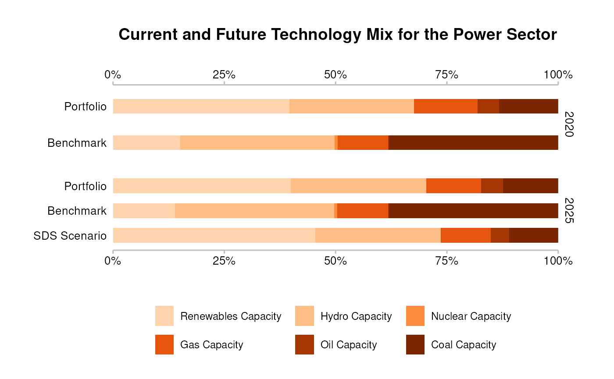
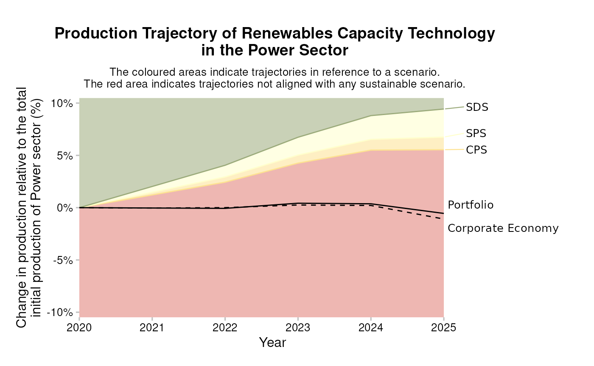
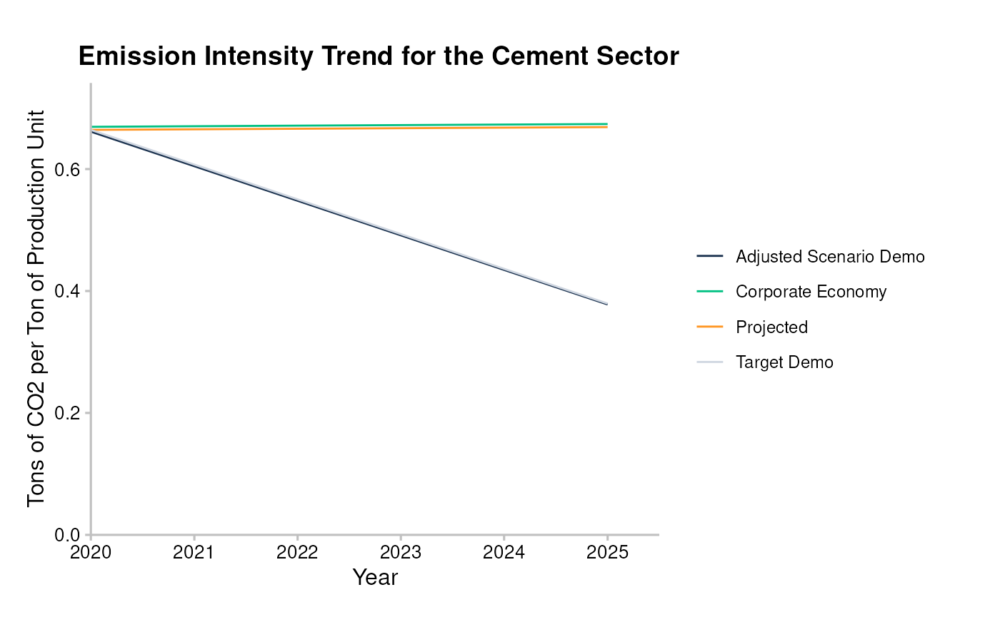

Interpretation of Results
Source:vignettes/articles/cookbook_interpretation.Rmd
cookbook_interpretation.RmdTarget Market Share
The target market share approach is used to calculate PACTA alignment metrics for the automotive, coal mining, oil & gas and power sectors. The commonality of these sectors is that there are production pathways by technology or fuel type available for each of them and the asset-based company data is available at the same level of technological granularity as the pathways. As long as these preconditions are fulfilled, the target market share approach could be extended to other sectors. The principle idea of the target market share approach is that every actor in a sector maintains their market share in terms of output units and that each actor reduces their use of high-carbon technologies proportionally, while expanding their use of low carbon technologies so that their market share remains constant, assuming all other actors follow the same approach. In aggregate, this will solve for the scenario changes at the sector level.
For detailed information about the Target Market Share metric and how it is calculated, see the Metrics appendix.
target_market_share() function
The target_market_share() function calculates the Target
Market Share metric and outputs a table including the calculated targets
at the portfolio level or at the company level, depending on the options
selected.
Explanation of Output
The primary columns/variables of interest in the output are the
production and metric variables. What the
production variable represents depends on the values in all
of the columns that precede it, and in particular the
metric column. If the value in the metric
column on the same row is "projected", then the value in
the production variable will represent the production level
of your portfolio based on the ABCD data for that
sector/technology/year/scenario/etc. If the value in the
metric column on the same row begins with
"target_", e.g. "target_cps", then the value
in the production variable will represent the target level
of production for that sector/technology/year/scenario/etc. This target
level of production is derived based on the ABCD production value of
your portfolio in the start year follows the relative required changes
of the scenario based on the market share approach for the given year.
If the value in the metric column on the same row is
"corporate_economy", then the value in the
production variable will represent the total production
levels of the entire sector based on the ABCD for a given region, which
can be used as a benchmark to compare to your portfolio’s technology mix
or production volume trajectory.
For example, the output table could be filtered to view the projected coal power production values for your portfolio with:
dplyr::filter(
market_share,
metric == "projected",
technology == "coalcap"
)
#> # A tibble: 21 × 10
#> sector technology year region scenario_source metric production technology_share scope percentage_of_initial_production_by_scope
#> <chr> <chr> <int> <chr> <chr> <chr> <dbl> <dbl> <chr> <dbl>
#> 1 power coalcap 2020 global demo_2020 projected 21766. 0.132 technology 0
#> 2 power coalcap 2021 global demo_2020 projected 21957. 0.132 technology 0.00878
#> 3 power coalcap 2022 global demo_2020 projected 22148. 0.132 technology 0.0176
#> 4 power coalcap 2023 global demo_2020 projected 22340. 0.129 technology 0.0263
#> 5 power coalcap 2024 global demo_2020 projected 22531. 0.129 technology 0.0351
#> 6 power coalcap 2025 global demo_2020 projected 20104. 0.124 technology -0.0764
#> 7 power coalcap 2026 global demo_2020 projected 20266. 0.125 technology -0.0689
#> 8 power coalcap 2027 global demo_2020 projected 20427. 0.126 technology -0.0615
#> 9 power coalcap 2028 global demo_2020 projected 20589. 0.126 technology -0.0541
#> 10 power coalcap 2029 global demo_2020 projected 20751. 0.128 technology -0.0466
#> # ℹ 11 more rowsThe technology_share and
percentage_of_initial_production_by_scope variables also
contain values of interest, but they are derivatives of the values
contained in the production variable. For each
metric, the technology_share variable
represents the share of the row’s technology within its sector, relative
to the production values of other technologies in the same sector,
similar to what is shown in the technology mix
plots. The percentage_of_initial_production_by_scope
variable shows the percent change of the production value from the prior
year.
If you use the by_company = TRUE and the
weight_production = FALSE options of the
target_market_share() function, most of what’s said above
is true except relative to the company listed in that row in the
name_abcd column.
For detailed information about the table output of the
target_market_share() function and its columns, see the data
dictionary.
Technoloy Mix Plot
The technology mix metric focuses on technology shifts within the power, fossil fuels and automotive sectors, namely: (i) the changes in the technological processes by which outputs are produced (e.g. shift from coal-fueled to renewable-fueled power capacity), and (ii) changes in the nature of the output itself (e.g. shift from internal combustion engines to electric vehicles). This metric measures the bank’s relative exposure to the economic activities that are impacted by the transition to a low-carbon economy.
Explanation of Output
The technology mix plot shows how large a share of each technology the portfolio or company is exposed to in the sector - both at the time of the start of the analysis as well as five years into the future. This projected technology mix of the portfolio is compared to the technology mix in the benchmark region at the same two points in time. And it is compared to the technology mix that the portfolio would have to display five years in the future in order to be aligned with the selected transition scenario. All three types of technology mixes are shown based on assets from the same geographic region, as selected in the analysis.
Interpretation & Intuition
For any sector with low-carbon alternatives that can substitute high-carbon products or technologies, the technology mix plot shows the required relative effort to achieve technology shares in line with climate targets. If the low carbon shares of the portfolio/company are larger than those of the benchmark in a given year, then the portfolio/company can be a leader in the sector. If they are smaller than those of the benchmark, then the portfolio/company is a laggard.
In terms of alignment, a portfolio/company is aligned with the scenario if the technology shares of the low-carbon alternatives in the future are at least as large as those of the low-carbon alternatives shown in the technology mix of the climate scenario.
The overall intuition behind the technology mix plot is that all technologies or fuel types in a sector produce equivalent outputs (e.g. a MWh of electricity has the same use for the end user, regardless of whether it was generated from a coal-fired power plant or a solar panel). Given that the outputs are substitutes and with all else being equal, from an impact angle it can be said that the higher the share of low carbon technologies in the portfolio, the better the result from a climate perspective. From a financial risk angle, the intuition depends a lot on what the user expects the future of the market of a given sector to look like. If the user assumes that transition risk will primarily materialize in the form of carbon pricing, then it is again possible to say that the higher the share of low-carbon technologies in the portfolio, the lower the transition risk. If the user thinks that other, potentially opposing factors could be at play in the sector transition that shape the future of the market, it may be best to pick a scenario that closely resembles that expected future, such that a portfolio technology mix similar to the future scenario technology mix should reduce transition risk.
Generally, it is required to assess the alignment of a portfolio/company not only by the technology mix, but also by the production volume trajectory of the individual technologies of a given sector. This is because the technology mix plot cannot show if the overall output of the portfolio/company grows or declines, even thought he scenario may prescribe an overall production trend for the sector.

Trajectory Plot
The production volume trajectory metric aims to measure the alignment of a portfolio’s projected production volumes, based on the five-year capital expenditure plans of companies, to those given in climate scenarios. It is used for the fossil fuels, power, and automotive sectors. Changes in production volumes result either from transfer of production from one technology to another (e.g. internal combustion engines to electric vehicles) or from sheer expansion or contraction in the production coming from the technology/fuel (e.g. a company brings a new coal-fired power plant online). Projected production volumes at a 5-year horizon are considered at the individual client level at the technology level. The resulting volume trajectories are then compared with the trends set as targets in climate scenarios.
Explanation of Output
The production volume trajectory plot shows the production volume of the portfolio or company for one technology (or fuel type) at a time. The plot shows relative changes over a time frame between the start year of the analysis and five years into the future (solid black line). This projected production volume of the portfolio is compared to the production volume in the benchmark region over the same period of time (dashed black line). Finally the background of the plot is shaded in a color scale from red to yellow and green. The lines between the shaded areas represent the relative changes for the technology based on the scenario, using the market share approach. For low-carbon technologies, anything above the most ambitious scenario will be displayed in green, anything below the least ambitious scenario will be displayed in red. For high-carbon technologies, anything below the most ambitious scenario will be displayed in green, anything above the least ambitious scenario will be displayed in red. Generally, the production volume trajectory plot shows multiple scenarios from the same scenario publication, although it also works when comparing the portfolio to a single scenario (the scenario line would split the background in two shaded areas in that case).
Interpretation & Intuition
For a technology in a portfolio/company to be perfectly aligned with a climate transition scenario, the production pathway (solid black line) would have to exactly follow the scenario line (the line separating two shaded areas). Low carbon technologies will usually have increasing scenario lines for the more ambitious scenarios. Business-as-usual scenarios for low-carbon technologies can have scenario lines in either direction. For a low-carbon technology, a portfolio/company is aligned with any scenario below the production plans. For a high-carbon technology, a portfolio/company is aligned with any scenario above the production plans.
The intuition is that low-carbon technologies must be scaled up to reach more ambitious climate targets, whereas high-carbon technologies have to be scaled down or, in some cases, even phased out. Therefore, if the production plan of a portfolio/company scales up a low carbon technology faster than the scenario, it contributes strongly to reaching the scenario outcome. conversely, if the portfolio/company does not scale up low-carbon technologies at the scenario pace, it contributes to slowing down the transition below the scenario ambition.
Another aspect about the intuition behind the more ambitious scenarios is that a higher ambition in transitioning to a low-carbon economy (scaling up low-carbon technologies and scaling down high-carbon technologies) correlates with a lower expected global heating outcome.

Sectoral Decarbonization (SDA) Target
The sectoral decarbonization approach (SDA) is used to calculate PACTA alignment metrics for the aviation, cement and steel sectors. The commonality of these sectors is that there are no market ready production-pathways at the technology level (or fuel type level) available yet that can be used to describe how to decarbonize the sector activities. They are currently considered “hard-to-abate” sectors. Since there are no market-ready low-carbon alternatives available in these sectors at the moment, that can be scaled up fast, the SDA approach is used to calculate sector-level metrics instead of the technology level metrics available for sectors that use the market share approach. These sector level metrics are production-based emission intensities, such as tonnes of CO2 per tonne of cement or tonnes of CO2 per tonne of steel. Regardless of how the output unit is produced, this is a comparable measure for the entire sector. The principle idea of the SDA approach is that the required carbon intensity that a sector needs to reach in the future, given assumptions around future production volumes, can be derived by dividing a sector specific carbon budget by the expected production volume. The current GHG emissions divided by the current aggregate sector production volume gives the starting point of the emission intensity. If the actors in a sector decarbonize the production in a way that follows the average emission intensity of the sector, then the scenario assumptions will be solved for in aggregate. At the portfolio/company level, the SDA approach requires every actor to decarbonize their production following their individual trajectory that starts at their current emission intensity and converges on a common emission intensity that is the same for all actors in a sector at the end of the scenario time frame (for example in 2050). This means that a company with an already lower emission intensity will not have to reduce their emission intensity as much as a company that lags the current sector average.
For detailed information about the Sectoral Decarbonization (SDA) metric and how it is calculated, see the Metrics appendix.
target_sda() function
The target_sda() function calculates the Sectoral
Decarbonization Target metric and outputs a table including the
calculated targets at the portfolio level or at the company level,
depending on the options selected.
Explanation of Output
The primary column/variable of interest in the output is the
emission_factor_value variable. What the
emission_factor_value variable represents depends on the
values in all of the other columns, and in particular the
emission_factor_metric column. If the value in the
emission_factor_metric column on the same row is
"projected", then the value in the
emission_factor_value variable will represent the physical
emission intensity level of your portfolio based on the ABCD data for
that sector/year/region/scenario/etc. If the value in the
emission_factor_metric column on the same row begins with
"target_", e.g. "target_cps", then the value
in the emission_factor_value variable will represent the
target level of physical emission intensity for that
sector/year/region/scenario/etc. This target level is derived based on
the ABCD emission intensity value of your portfolio in the start year
and converging with the emission intensity of the scenario in the final
year. If the value in the emission_factor_metric column on
the same row is "corporate_economy", then the value in the
emission_factor_value variable will represent the weighted
average physical emission intensity of the entire sector, which can be
used as a benchmark to compare to your portfolio’s emission intensity
levels. If the value in the emission_factor_metric column
on the same row starts with "adjusted_", then the value in
the emission_factor_value variable will represent the
scenario trajectory of the emission intensity, adjusted for differences
between the sector totals in the ABCD and the scenario data.
If you use the by_company = TRUE option of the
target_sda() function, most of what’s said above is true
except relative to the company listed in that row in the
name_abcd column.
For detailed information about the table output of the
target_sda() function and its columns, see the data dictionary.
Emission Intensity Plot
The emission intensity metric measures the average CO2 intensity of the portfolio in the cement and steel sectors. This projected emission intensity of a portfolio or company is given as CO2/economic unit of output (for example, CO2 per ton of steel produced). This five year forward-looking trajectory of the emission intensity is then compared to an emission intensity reference trend over the same period of time based on a climate transition scenario.
The emission intensity of the activities financed by the portfolio is the metric of choice in sectors for which no clear technology pathways have been set out (namely, cement and steel). Put differently, for these sectors, no scalable zero-carbon alternative yet exists. As such, it is not possible to use the technology mix metric or the production volume trajectory metric to measure alignment. However, it is still imperative to steer capital in a way that aims to decrease carbon emissions in these sectors – hence the emission intensity metric is used.
Explanation of Output
The emission intensity plot shows the projected emission intensity of the portfolio or company (labeled “Projected” in the plot) for a given sector. This is compared to the emission intensity target of the portfolio or company (labeled “Target” in the plot), which starts at the same initial value, but then converges towards a common emission intensity target for all actors in the sector at the end of the scenario time frame. Additionally, the plot show a benchmark trajectory of the emission intensity of the sector (labeled “Corporate Economy” in the plot), which is based on the average of all companies in the given sector and region. The starting point of this benchmark often differs from that of the portfolio or company. Lastly, the plot contains the scenario target for the sector as a whole, based on all companies in the benchmark group (labeled “Adjusted Scenario” in the plot). This is the trend line that the target of the portfolio or company converges towards at the end of the scenario time frame (often 2050 and not always shown in the plot).
Interpretation & Intuition
The start value of the portfolio or company relative to the benchmark tells us if the portfolio or company is a leader or a laggard in the sector at the start year of the analysis. If the start value is higher than that of the average, the emission intensity of the portfolio/company is higher than average. This implies that the portfolio/company will have to reduce its emission intensity in the given sector at a steeper rate than the average company, because all emission intensities of the sector need to converge at the end of the scenario time frame and the distance towards that target is higher for a laggard with a high start value than for a leader with a lower than average start value. A portfolio or company is considered aligned with the scenario of the projected emission intensity decreases at a rate at least as steep as the individual target trajectory, as this trend ensures that the portfolio or company will reach the point of convergence at the end of the time frame. Not reaching that level of emission intensity would contribute to jeopardizing the sector target according to the scenario or place a higher burden on other participants to compensate for the lack of ambition. Such a trend, indicated by a projected line higher than the individual scenario target, would therefore be considered misaligned.
The intuition behind the emission intensity plot is that the lower the emission intensity of the portfolio/company, the better the result from a climate perspective. This is because, assuming the overall production of the sector remains constant, the absolute emissions of the sector are lower when the emission intensity is lower which, in turn, leads to less GHG emissions and finally to less global heating.

PREVIOUS CHAPTER: Running the Analysis
NEXT CHAPTER: Advanced Use Cases